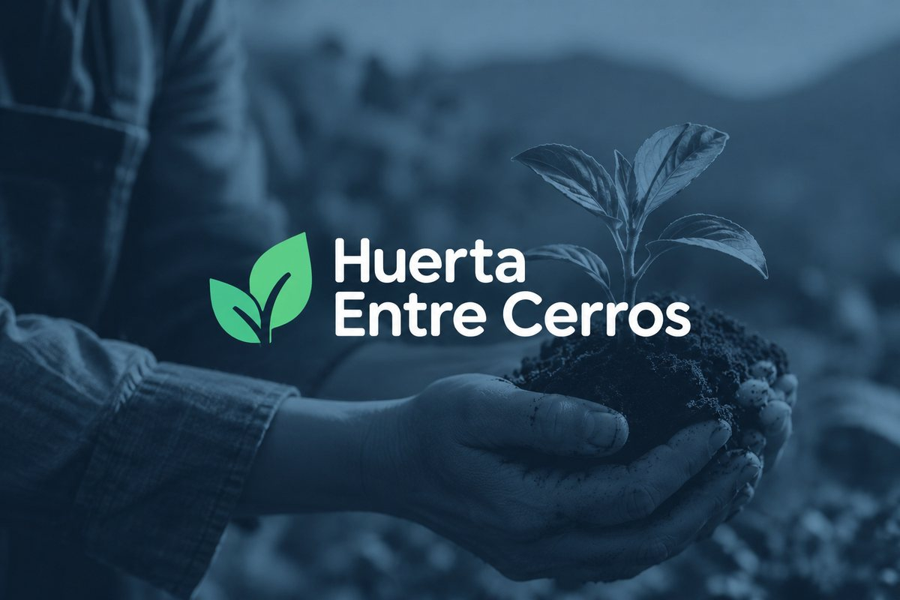
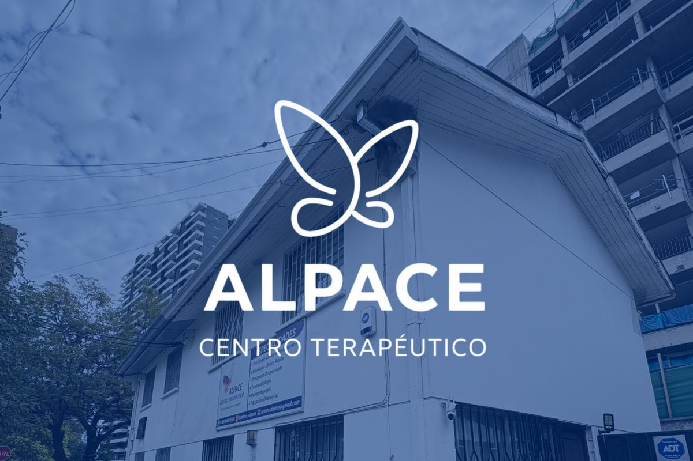
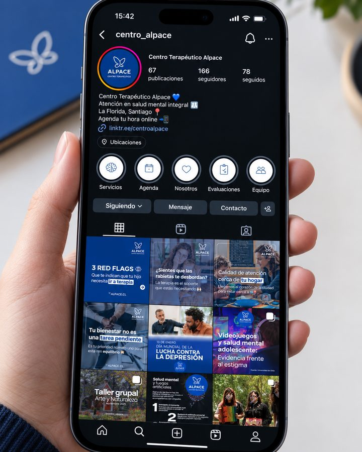
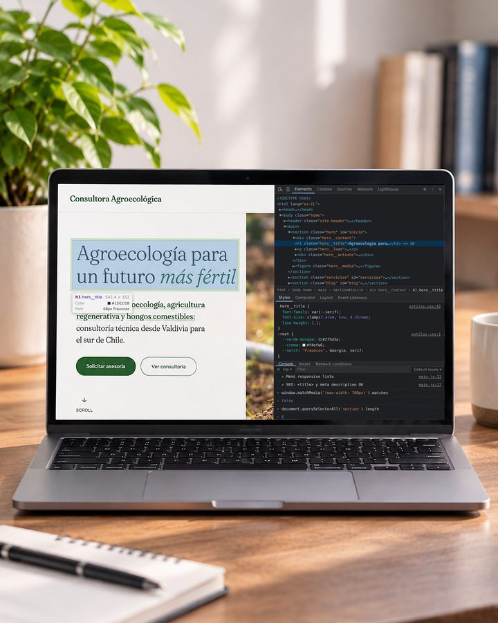
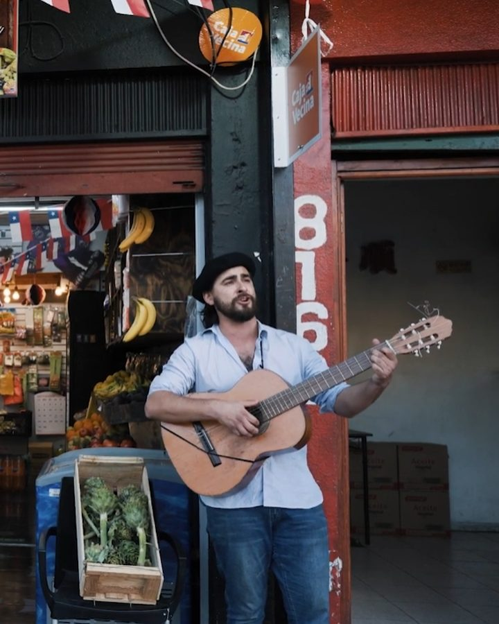

Huerta Entre Cerros (ver sitio web, abre en otra pestaña)
Sitio web a medida, rápido, seguro y pensado para aparecer en Google.
Asegura la presencia digital de tu empresa o emprendimiento.
Proyectos recientes de branding, redes sociales y desarrollo web.

Sitio web a medida, rápido, seguro y pensado para aparecer en Google.

Identidad visual desde cero y estrategia de Instagram que sumó más de 100 seguidores.
Emprendimiento que conecta a personas cuidadoras con trabajo formal. Finalista de Despega USACH 2025.

Antes de diseñar, definimos qué quieres contar y a quién. Así cada logo, publicación o newsletter trabaja para que tu marca se recuerde.

Un sitio propio, hecho a medida y sin plantillas, para que quien te busque en Google encuentre información clara y te contacte.

Si ya vendes por WhatsApp, Instagram o una tienda online, ordenamos ese canal para que más visitas terminen en compra.
La primera reunión de diagnóstico es gratis y sin compromiso.